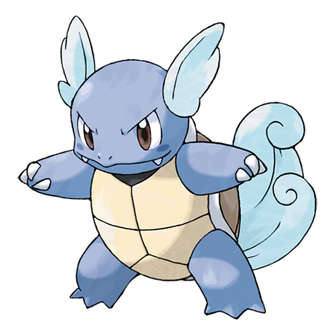

Wartortle é um Pokémon de água que evolui de Squirtle e evolui para Blastoise. Ele é uma tartaruga com casco azul e duas caudas grandes e peludas. O Wartortle usa as suas caudas para nadar e manter o equilíbrio, e a sua cauda longa é vista como um símbolo de longevidade.
 index